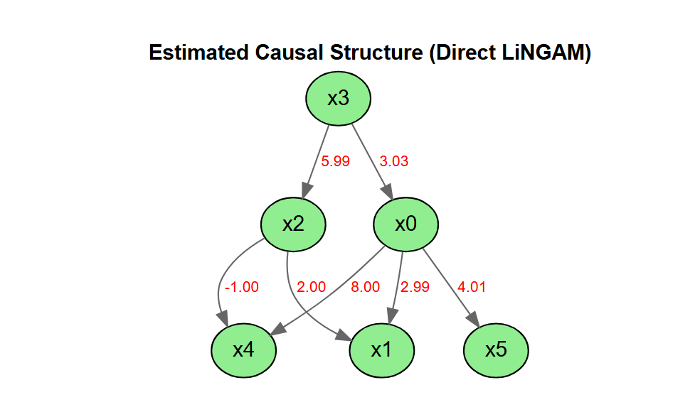

LiNGAM is a method for estimating structural equation models or linear Bayesian networks. It is based on using the non-Gaussianity of the data.
lingamr is a port to R of the LiNGAM package (LiNGAM: Linear Non-Gaussian Acyclic Model), which is available in Python.
This is currently an alpha version under development, and we are releasing it for the purpose of testing and gathering feedback.
Features
- Implementation of the Direct LiNGAM algorithm
- Stability assessment of causal structures using the bootstrap method, including causal-order stability
- Model diagnostics: residual independence / normality tests and a one-call
summary_lingam() - Visualization with DiagrammeR (interactive) and ggplot2
autoplot()(static) - broom-style tidiers (
tidy()/glance())
This package does not include all the features of the Python version, and it also includes some features that are not present in the Python version.
Installation
You can install the development version of lingamr from GitHub with:
# install.packages("pak")
pak::pak("morimotoosamu/lingamr")Some functionality relies on the following suggested packages: DiagrammeR (interactive plots), igraph and ggplot2 (static autoplot() graphs and QQ plots), glmnet (adaptive LASSO), and nortest / tseries (residual tests).
Quick start
library(lingamr)
# Generate sample data from a 6-variable LiNGAM model
x <- generate_lingam_sample_6(n = 1000)
# Estimate the causal structure with Direct LiNGAM
model <- lingam_direct(x$data)
# Estimated causal order (as variable names)
colnames(x$data)[model$causal_order]
#> [1] "x3" "x2" "x0" "x4" "x5" "x1"
# Visualize the estimated causal graph
model$adjacency_matrix |>
plot_adjacency(
labels = colnames(model$adjacency_matrix),
title = "Estimated Causal Structure (Direct LiNGAM)",
rankdir = "TB",
shape = "ellipse",
fillcolor = "lightgreen"
)
Learn more
For a full walkthrough — prior knowledge, total causal effects, residual independence and normality tests, and bootstrap (including parallel execution) — see the vignette:
vignette("lingamr")It is also available online at the package website.
Licence
MIT License
Original work: Copyright (c) 2019 T.Ikeuchi, G.Haraoka, M.Ide, W.Kurebayashi, S.Shimizu
Portions of this work: Copyright (c) 2026 O.Morimoto
References
Algorithm
- Shimizu, S. et al. (2011). DirectLiNGAM: A direct method for learning a linear non-Gaussian structural equation model. Journal of Machine Learning Research, 12, 1225-1248.
Original Implementation (Python)
- Ikeuchi, T. et al. (2023). Python package for LiNGAM algorithms. Journal of Machine Learning Research, 24(14), 1-7. https://github.com/cdt15/lingam
Books
- 清水昌平(2017)『統計的因果探索』講談社.
- 梅津佑太・西村龍映・上田勇祐(2020)『スパース回帰分析とパターン認識』講談社.
- 鈴木譲(2025)『グラフィカルモデルと因果探索100問 with R』共立出版.
R Packages Referenced
- G. Kikuchi (2020). rlingam https://github.com/gkikuchi/rlingam